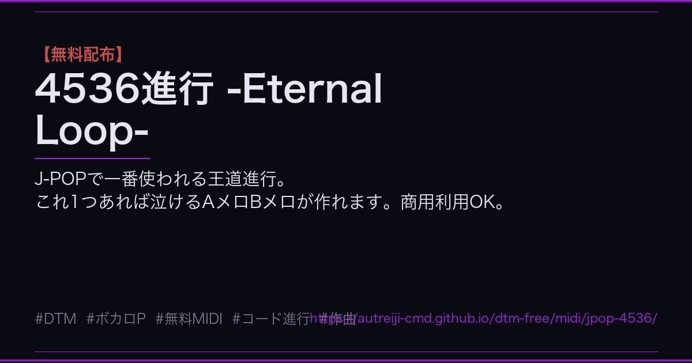
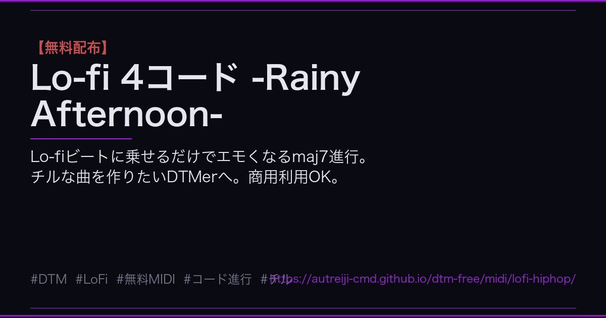
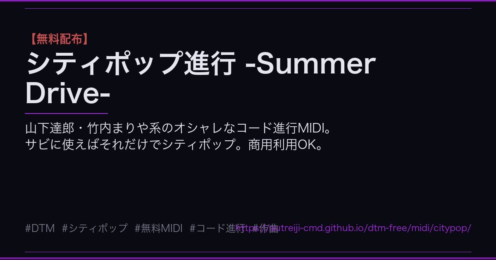
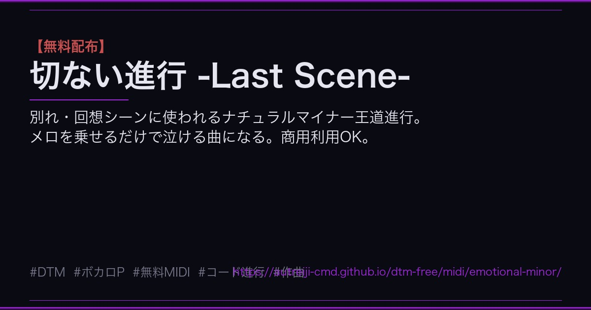
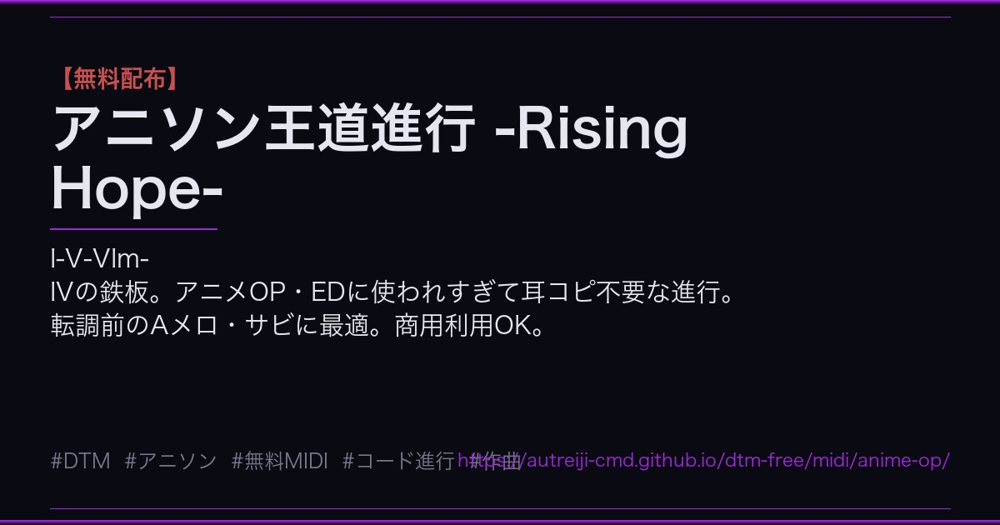
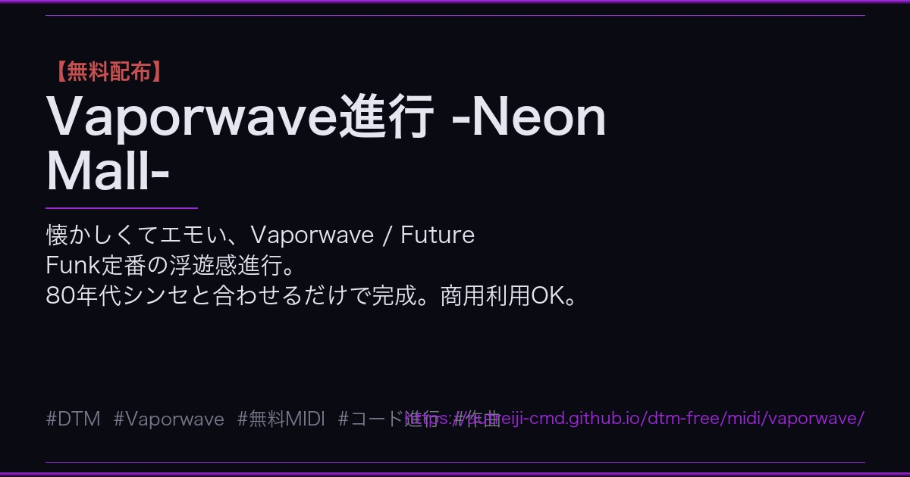

4536進行 -Eternal Loop-
BPM 95 ▼ ダウンロード
Lo-fi 4コード -Rainy Afternoon-
BPM 75 ▼ ダウンロード
シティポップ進行 -Summer Drive-
BPM 100 ▼ ダウンロード
切ない進行 -Last Scene-
BPM 80 ▼ ダウンロード
アニソン王道進行 -Rising Hope-
BPM 140 ▼ ダウンロード
Vaporwave進行 -Neon Mall-
BPM 88 ▼ ダウンロード
Lo-fi ドラムパターン -Lazy Sunday-
BPM 75 ▼ ダウンロード
HipHop Boom Bap -Street Beat-
BPM 90 ▼ ダウンロード
Trap ハイハット -Dark Trap-
BPM 140 ▼ ダウンロード
Amen Break風 -Jungle Step-
BPM 174 ▼ ダウンロード
シティポップ ドラム -Groove 80s-
BPM 100 ▼ ダウンロード
琉球音階進行 -Shima Uta-
BPM 84 ▼ ダウンロード
都節音階 -怪談夜話-
BPM 72 ▼ ダウンロード
ヒジャーズ音階 -Desert Wind-
BPM 88 ▼ ダウンロード
ケルトドリアン -Ancient Forest-
BPM 96 ▼ ダウンロード
ブルース・シャッフル -Midnight Train-
BPM 92 ▼ ダウンロード
ジャズバラードII-V-I -Rainy Night-
BPM 62 ▼ ダウンロード